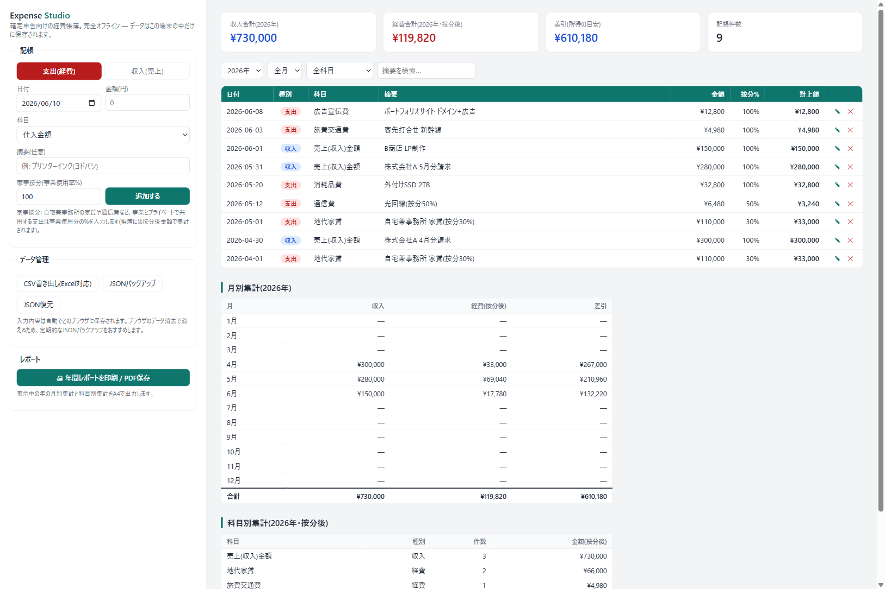

Expense Studio は、ブラウザで開くだけで使える買い切り型の経費帳簿。収支内訳書の科目プリセット、家事按分の自動計算、月別・科目別集計。登録不要・完全オフラインで、あなたの収支データがネットに出ることはありません。
▶ ブラウザでデモを試す(無料) 製品版を購入 — $10
白色申告の収支内訳書に準拠した科目プリセット(地代家賃、水道光熱費、旅費交通費、通信費、消耗品費など)。カスタム科目も追加可能。
自宅兼事務所の家賃・通信費は事業使用率%を入れるだけ。集計はすべて按分後金額で自動計算。
月ごとの収支と科目ごとの年間合計をリアルタイム表示。年間レポートはA4印刷・PDF保存対応。
UTF-8 BOM付きでExcelでも文字化けしない。会計ソフトへの移行や税理士への共有にも。
処理はすべて端末内。アカウント登録もサーバー送信もなし。自動保存+JSONバックアップ。
年・月・科目・摘要テキストで瞬時にフィルター。記帳の編集・削除もワンクリック。
記帳無制限の製品版HTML+マニュアルをお届けします。
※購入時のメッセージ欄に「Expense Studio」とお書きください。